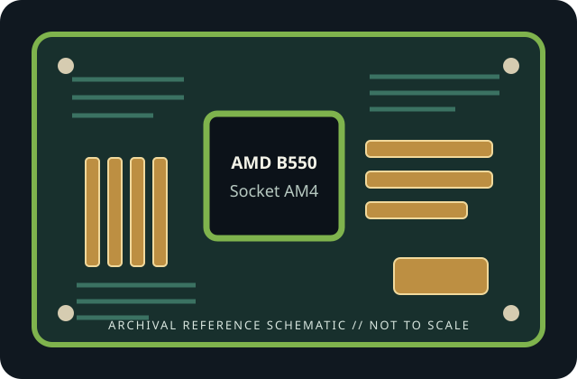

[ INDIVIDUAL COMPONENT // MOTHERBOARDS ]
ASRock B550 Taichi
AMD B550 Socket AM4 2020 enthusiast desktop board. This static record describes this exact model and revision only; confirm the printed PCB identity and use the cited manufacturer's support files.

REVISION / FIRMWARE WARNING: Similar model names, PCB revisions and regional SKUs may differ in connectors, radio hardware and firmware. Identify the exact board printed on the PCB before selecting a BIOS.
Specifications
| Exact model / generation | ASRock B550 Taichi — 2020 enthusiast desktop board |
|---|---|
| Chipset | AMD B550 |
| CPU socket / support | Socket AM4; processor families and minimum BIOS are limited to the exact manufacturer CPU support list. |
| Form factor | ATX, 305 × 244 mm |
| Memory support | Four dual-channel DDR4 DIMM slots; up to 128 GB. Data rate, ECC operation and validated kits depend on CPU, BIOS and ASRock memory QVL. |
| PCI Express expansion | Three x16-length slots plus two x1 slots. The top CPU-connected slot supports PCIe 4.0 with compatible Ryzen processors; lower slot generations/widths and lane sharing are documented in the manual. |
| Storage | Two M-key M.2 storage sockets (one CPU-connected PCIe 4.0 x4; chipset socket supports PCIe/SATA modes as specified) and eight SATA 6 Gb/s ports. Verify M.2/SATA sharing. |
| Rear I/O and network | Rear USB Type-C and Type-A including USB 3.2 Gen 2, HDMI/DisplayPort for compatible APU, 2.5GbE LAN, Wi-Fi 6/BT antenna, audio and BIOS Flashback. |
| BIOS / manufacturer support | ASRock UEFI, BIOS Flashback and model-specific BIOS/CPU list. Confirm the exact CPU, minimum BIOS and board revision with ASRock before fitting a later AM4 processor. |
Compatibility and installation notes
B550 PCIe 4.0 support is limited to designated CPU-connected paths; other chipset paths use their listed generation. DDR4 only. CPU-dependent graphics outputs require an APU. Check slot sharing, memory QVL, M.2 protocol and case ATX clearance.
Before assembly, confirm board revision, chassis dimensions/standoffs, CPU cooler mount and power leads in the manual. Never infer processor compatibility from the physical socket alone. For memory, follow the documented population order and consult the exact board's QVL; EXPO/XMP and other overclocked speeds are not guaranteed.
Read the lane-sharing tables before installing expansion cards and drives. Observe ESD precautions, protect socket contacts, and record the installed BIOS revision and any update history.
Preservation and service
Inspect the socket, DIMM slots, power connectors, M.2 thermal hardware and capacitors before use. Record PCB revision and serial/date codes, document repairs and test conditions, and retain model-matched manual and firmware files. Do not cross-flash firmware from a similarly named board.
Manufacturer sources
- ASRock B550 Taichi specificationsOfficial manufacturer documentation for this exact board; confirm current specifications and regional/revision-specific support.
- ASRock B550 Taichi BIOS, manual and CPU supportOfficial manufacturer documentation for this exact board; confirm current specifications and regional/revision-specific support.
Specification summary is static; manufacturer documentation and support lists for the physical revision are authoritative.